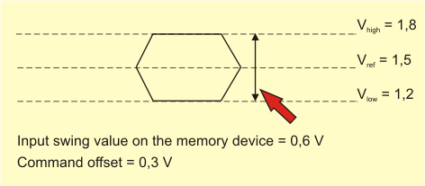
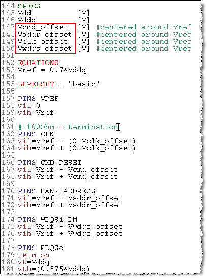

Non data related signals level configuration
The level configuration for non data related signals is a straight forward level configuration. Level configuration with the SmarTest software independent of the memory device is described in Setting the Levels.
The offset value is equal to half of the input swing value on the memory device (see following figure).

In addition to the general level configuration you need to specify Spec variables to define the offset value for each signal group that need to be added to the Vref value as specified in the data sheet of the memory device (see following figure).
